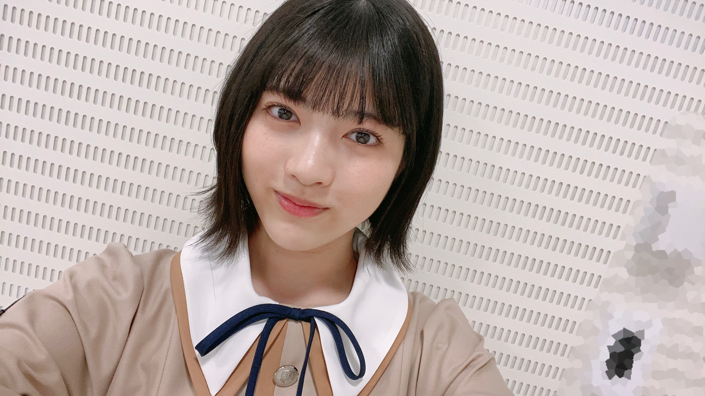
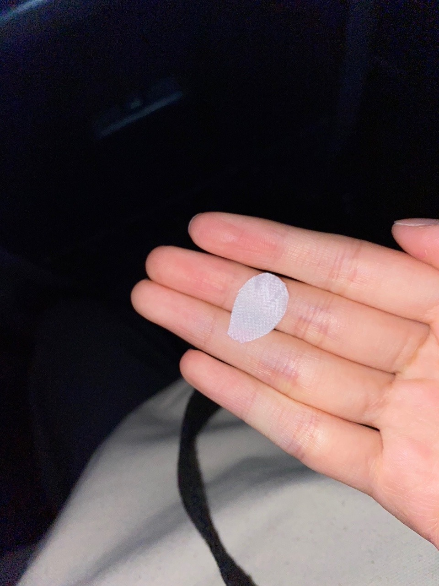
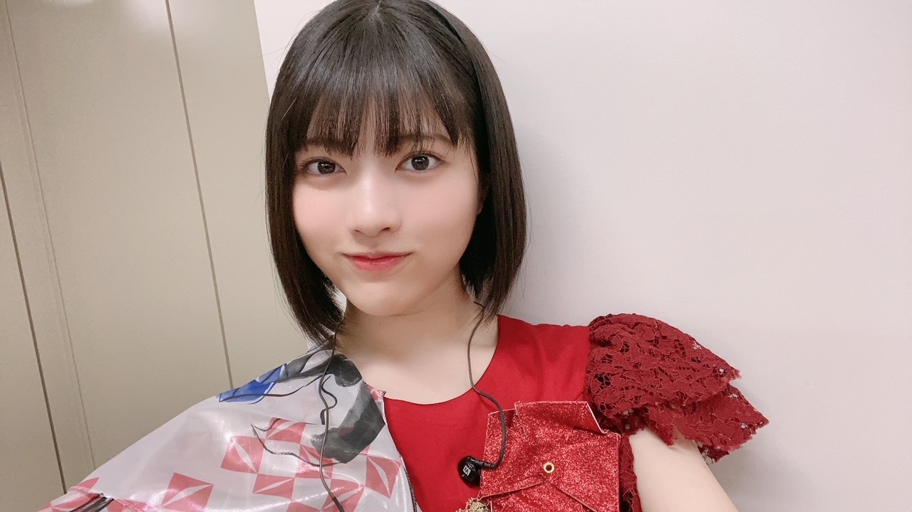
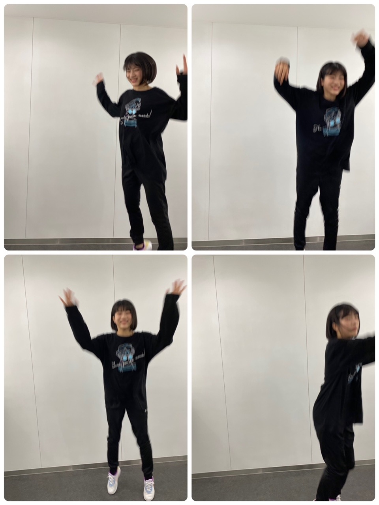
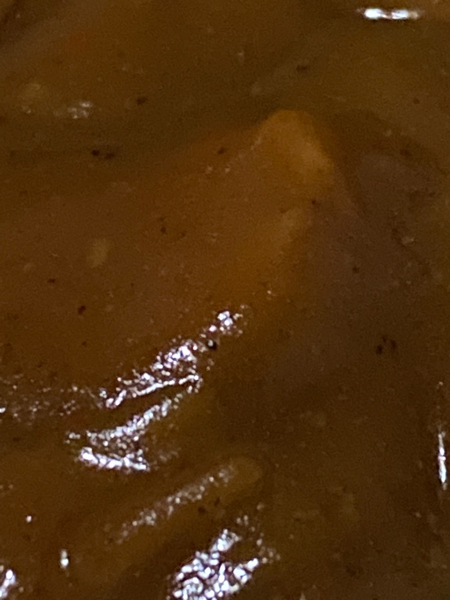

2020/1110Tueお疲れ様です！先輩方とのお話が主です。林瑠奈です。
本日もお疲れ様です。
乃木坂46、4期生の林瑠奈です。
神奈川県出身高校2年生17歳
華咲くセブンのティーンの林瑠奈です。
負けるなしょげるな林瑠奈、今日も1日頑張るな
(ピンポーン)
40周目となりました、ブログリレー。
最近ふと思ったことなんですが、(いや、この後の文脈的に"最近"はまだ使いたくない)
以前は、『〜○周目となりました、ブログリレー』の定型文の後、一つ波があってから本題へと入っていたんです。 近況とか近況とか...
でもここ何周か、というかしばらくの間、さらっと本題へ入っていたなと思いまして。
そういえばここは、最近の出来事を書く場所やったぞと思い出したのであります。
はい。
【ノギザカスキッツACT 2】
昨晩からスタート致しました。
シーズン2となります今期からは、3期生の方々と共に番組をやらさせて頂いています。
心強い皆さんと一緒に、より良いものを作っていけるよう誠心誠意頑張らさせて頂きます。

以前、ACT 2のビジュアル撮影があった際のことを少し。
先日ののぎおびでも話させていただいたのですが、3期生の先輩とのことです。
ブログで"お話ししてみたい先輩"として挙げさせて頂いて、そこから連絡を取らせて頂いていた、吉田綾乃クリスティーさん。
ブログを見てくださり、わたしの誕生日の際に連絡をくださった、中村麗乃さん。
推しメンとして挙げさせて頂いている、
伊藤理々杏さん。
3期生さんとコミュニケーションを取るチャンスだと思っていたこの日に、御三方に話しかけることに成功致しました！！
皆さんで『いっせーのーせ』をされているのを見て、いつ話しかけに行こうかと迷った挙句、あやてぃーさんに
「いま話しかけに行ってもいいですか？」
とメールをして承諾を得ましたので、さやかに付いて来てもらって、出陣しました。
その後、あやてぃーさん、れのさん、りりあさんとさやかとわたしの5人で『いっせーのーせ』をやらせていただいて、もうもの凄く嬉しかったです！
あやてぃーさんがりりあさんに耳打ちをして、わたしは『好きだよ！』と。りりあさんに言っていただきました。
嬉しい！愛しい！世界一！
色々お話しさせて頂けて、とても楽しかったです。
林の積極性ステータスが成長しているのではないかと自分ながらに思っています。
ノギザカスキッツACT 2、よろしくお願い致します！！
...........................................................................
そんなお優しいあやてぃーさんが、この間お仕事ですれ違ったとき、造花の桜の花びらを置いてくださいました。

無事、守り抜きました。
...........................................................................
『乃木坂46 4期生ライブ 2020』
12月6日(日)に、4期生ライブを開催させて頂けることが発表されました。
16人でライブをさせて頂けること、本当に有難いなと思っています。
皆さんに楽しんで頂けるように、
盛り上がり過ぎて次の日の皆さんは、疲労で遅刻をかますだろうというぐらいの熱量を届けますので、よろしくお願い致します！！
4期生の頼れる師範たちにお世話になりながら、頑張らさせて頂きます。
...........................................................................

『世界で1番 孤独なLover』での衣装です。
上記のように3期生さんとコミュニケーションを取ることに成功した林は、前日リハーサル、当日も先輩方に話しかけることに挑戦しました。
そうなんです、だから生写真にサインをして頂くことができたのです。
当日リハーサルの際にわたしが歩いていたら、後ろからりりあさんが寄ってきてくださいました。
お、おはようございます！しか言えなかったです。
皆さん本当にお優しくて、れのさんもあやてぃーさんも横を通ったときに声をかけてくださったりして、暖かさが五臓六腑に染み渡りました。
もう染みすぎてふやけそうな勢いでした。
うれしかったです☺︎

なおが撮ってくれた写真です。
鳥になろうとした様です。
...........................................................................
明日はミュウちゃんです。
ご指導ご鞭撻の程よろしくお願いします。
アディオス！！
先日ののぎおびにて、「夏野菜カレーが好きです。でも今年は食べれてないんですよ。」とわたしが言っていたようで、
それを聞いた母親が『絶対夏野菜カレー食べてるはず』と断言してきました。
忘れられていたのが悔しかったらしく、夏野菜カレーを作ってくれました。

P.S.黙りか、喋りか、無理か
声だけで癒されるし可愛いと散々言ってました。
りかお疲れ様、めっちゃ可愛かった☺︎
かしこ
2020/11/10 15:06
コメント(170)
るなるなー！
ルナ

ハヤシライスブログ更新ありがとう！
林の3期生とのエピソードを聞いてもっと乃木坂が好きになった！優しい先輩達との活動を楽しんでください！それをテレビから見て笑わしてもらいます！夏野菜カレーすごく美味しそう！
○質問
○林はカレーの時に福神漬けは、必要だと思いますか？僕は芸人で例えるとツッコミくらい必要だと思います。
○乃木坂スキッツ、ウエイトレス林期待してよろしいですか？笑
林の3期生とのエピソードを聞いてもっと乃木坂が好きになった！優しい先輩達との活動を楽しんでください！それをテレビから見て笑わしてもらいます！夏野菜カレーすごく美味しそう！
○質問
○林はカレーの時に福神漬けは、必要だと思いますか？僕は芸人で例えるとツッコミくらい必要だと思います。
○乃木坂スキッツ、ウエイトレス林期待してよろしいですか？笑
落ち着け、林！笑。
はやしブログ更新ありがとう❗
色んな3期生の先輩方とお話できるようになってきて、はやしのコミュ力が成長してきてるのを身に染みて感じている今日この頃…
ここで質問したい事があるんやけど、3期生でまだあんまり関わりを持ててない先輩はいる❓
いるとしたら、この質問をきっかけにもう1回くらいさやかと出陣してみたらどうかな笑
メンバーと仲良くしてるとこを見たり聞いたりするとほっこりします(●︎´▽︎`●︎)
また5日後のブログ更新待ってるね〜❗
色んな3期生の先輩方とお話できるようになってきて、はやしのコミュ力が成長してきてるのを身に染みて感じている今日この頃…
ここで質問したい事があるんやけど、3期生でまだあんまり関わりを持ててない先輩はいる❓
いるとしたら、この質問をきっかけにもう1回くらいさやかと出陣してみたらどうかな笑
メンバーと仲良くしてるとこを見たり聞いたりするとほっこりします(●︎´▽︎`●︎)
また5日後のブログ更新待ってるね〜❗
いつも面白いねー。文才豊かですね！
多くの人にとっては小さな一歩でも、林の瑠奈ちゃんにとっては人生の大きなはじめの一歩なんで、ご成長おめでとう
多くの人がどうだろう（他人との比較）と自分の価値ある人生には何の意味も無いと悟って命の無駄遣いせず、セブンのティーンで既に自己の成長（過去の自分との比較）のみに目をやれ、意識を集中できてる時点で随分の遥か先に進めてるしな
もっとも、自分がもっともっと成長するために、人に有って自分に無いイイ所について研究するのは大いにアリやけどな
来月のライブめちゃめちゃ楽しみにしとるけんね〜
多くの人がどうだろう（他人との比較）と自分の価値ある人生には何の意味も無いと悟って命の無駄遣いせず、セブンのティーンで既に自己の成長（過去の自分との比較）のみに目をやれ、意識を集中できてる時点で随分の遥か先に進めてるしな
もっとも、自分がもっともっと成長するために、人に有って自分に無いイイ所について研究するのは大いにアリやけどな
来月のライブめちゃめちゃ楽しみにしとるけんね〜
あの私は野菜カレーが好きです
はやすぃー！林・瑠奈・ハナサクィー！
今電車なのでなにも思い浮かばない…
おーまいがっ！
頑張れ！
今電車なのでなにも思い浮かばない…
おーまいがっ！
頑張れ！
こんばんわ！
先輩達に話かけにいくの勇気いるよね！おめでとうございます！
事前に連絡していくスタイル可愛いね、
そして、そんな4期生ライブが今からとても楽しみです！
るなぴ♪って言いながら、正座で観ますネ。
ps.夏野菜カレー近すぎじゃない？w
アディオス‼︎
先輩達に話かけにいくの勇気いるよね！おめでとうございます！
事前に連絡していくスタイル可愛いね、
そして、そんな4期生ライブが今からとても楽しみです！
るなぴ♪って言いながら、正座で観ますネ。
ps.夏野菜カレー近すぎじゃない？w
アディオス‼︎
るなぴ、おこんばんは～です。
写真をよく見れば分かりますが、完全に鳥になってますよ。
てか、鳥にしか見えん。
なかなか立派なカラスですな。
写真をよく見れば分かりますが、完全に鳥になってますよ。
てか、鳥にしか見えん。
なかなか立派なカラスですな。
更新ありがとう！
スキッツ、まだ見てないから楽しみ！！
スキッツ、まだ見てないから楽しみ！！
瑠奈ちゃん、ブログ更新ありがとう。佐藤璃果ちゃんが話していた外ハネの髪も、「世界で１番孤独なLover」の衣裳を着た時の普通のボブの髪型も最高ですよ。
おつかれん
【4枚目の写真で一言】
る：やったー！白目だけで
R-1ぐらんぷり決勝進出決定だー！！


る：やったー！白目だけで
R-1ぐらんぷり決勝進出決定だー！！
林さん、こんばんは。
いつもすてきなブログをありがとう。
「セブンのティーン」でやられました。知ってるの？
ブログ「〇周目」もそろそろ終わりですかねえ。今後も可能ならばできるだけたくさんのブログを見たいです。
次回も楽しいブログを期待しています。
いつもすてきなブログをありがとう。
「セブンのティーン」でやられました。知ってるの？
ブログ「〇周目」もそろそろ終わりですかねえ。今後も可能ならばできるだけたくさんのブログを見たいです。
次回も楽しいブログを期待しています。
こんばんは！ ブログ更新ありがとう！
私もりりあさんを推しています！
回鍋肉作ったよー！ おいしく作れてよかったです！
セカラバの衣装大好きです！ 凄く似合ってますよー！
anan届きました(^▽^)/ 読むのが楽しみです。
やっと、刹那少女みえました！ 凄くかわいくて、演技がうまくて尊敬しています。
質問です！
最近、見てるアニメはなんですか？
秋の夜長にしてみたいことはなんですか？
答えてくれたらうれしいです！
お体に気を付けてお過ごしください。
またかきこむねー！
またねー！
私もりりあさんを推しています！
回鍋肉作ったよー！ おいしく作れてよかったです！
セカラバの衣装大好きです！ 凄く似合ってますよー！
anan届きました(^▽^)/ 読むのが楽しみです。
やっと、刹那少女みえました！ 凄くかわいくて、演技がうまくて尊敬しています。
質問です！
最近、見てるアニメはなんですか？
秋の夜長にしてみたいことはなんですか？
答えてくれたらうれしいです！
お体に気を付けてお過ごしください。
またかきこむねー！
またねー！
おつかれさま。
ノギスキ、始まりましたね。文字通り
パワーアップ。
３期生のスキット、流石だよね。
まず、声が大きいし、キャラの成りき
り度が高くてメリハリが効いてる。
今回は期別だったけど、融合が楽しみ。
先輩とのコミュニケーションはとらな
い手はないよね。優しいし、いい事だ
らけ。
金のテープ、銀のテープならぬ、桜の
花びら。
４コマ写真、陽気だね。鳥まであと少
し。
スパイスが効いてそうな、艶のあるカ
レールー、美味しそう。
夏野菜感が．．．
ノギスキ、始まりましたね。文字通り
パワーアップ。
３期生のスキット、流石だよね。
まず、声が大きいし、キャラの成りき
り度が高くてメリハリが効いてる。
今回は期別だったけど、融合が楽しみ。
先輩とのコミュニケーションはとらな
い手はないよね。優しいし、いい事だ
らけ。
金のテープ、銀のテープならぬ、桜の
花びら。
４コマ写真、陽気だね。鳥まであと少
し。
スパイスが効いてそうな、艶のあるカ
レールー、美味しそう。
夏野菜感が．．．
ブログ更新ありがとう。可愛い写真もありがとう。またバッチリコメ残すね。ナオッチ
初コメです！
最近どんどん林ちゃんが活躍していて嬉しいです！
先輩たちとも仲良くなれたみたいでよかったね(^O^)
これからも応援してます！
最近どんどん林ちゃんが活躍していて嬉しいです！
先輩たちとも仲良くなれたみたいでよかったね(^O^)
これからも応援してます！
アディオス！！
自己紹介の所の(ピンポーン)て何の音でしょう？
るなぴ！ブログ更新ありがとう！！
夏野菜、私食べれないんです。というか野菜食べれない。。。
質問「1番好きな野菜は何ですか？」
るなぴが好きな野菜から克服していきたいなと思います。
あ、4期生ライブ絶対見るね。チョウタノシミ。
そんじゃ今回はこの辺でアディオス！！アディオス！！！
(大事なので2回言いました。もっと上手にはなしたい。)
夏野菜、私食べれないんです。というか野菜食べれない。。。
質問「1番好きな野菜は何ですか？」
るなぴが好きな野菜から克服していきたいなと思います。
あ、4期生ライブ絶対見るね。チョウタノシミ。
そんじゃ今回はこの辺でアディオス！！アディオス！！！
(大事なので2回言いました。もっと上手にはなしたい。)
僕今
世界一孤独なぼっちです
しゅげるな めげるな がんばるな
世界一孤独なぼっちです
しゅげるな めげるな がんばるな
ブログ更新ありがとう！
この話前ののぎおびでもしてたよね！
本当に嬉しかったんだ！
確かに憧れてる人とか、好きな人に話しかけるのは緊張するし、話せたら最高の気分ですよね
最近のるなぴが前よりも笑顔が更に増えてて、とても幸せなんだなと感じます
そのおかげで、自分もとても幸せですし、元気をもらってます
4期生ライブたのしみですね！
それでは！
アディオスかしこ
かしこかしこ
この話前ののぎおびでもしてたよね！
本当に嬉しかったんだ！
確かに憧れてる人とか、好きな人に話しかけるのは緊張するし、話せたら最高の気分ですよね
最近のるなぴが前よりも笑顔が更に増えてて、とても幸せなんだなと感じます
そのおかげで、自分もとても幸せですし、元気をもらってます
4期生ライブたのしみですね！
それでは！
アディオスかしこ
かしこかしこ
るなちゃーん！大好きな先輩3人と大好きな掛橋ちゃんと一緒に話せてよかったね！ 4期ライブほんとにおめでとう！めっちゃ見たかったけど期末テスト直前だから見れない…。悲しいけど遠くから応援しときます〜 次のブログも楽しみにしてます！
るなぴブログ更新ありがとうー
黙りか、喋りか、無理か・・・伊藤まりか！！
瑠奈ちゃん、 こんばんは！
同じグループにいるのに写真にサインしてもらう人も凄いですね、一般のファンみたいです。
ノギザカスキッツact2録画で見ました。3期生との距離も縮まると良いですね。
3期生の皆さんはお芝居が上手ですね、コントなので、エグザイルのアレなど大事な部分を振り切ってやれば、良いですね。
阿佐ヶ谷姉妹さんは流石ですね4期生の方に合わせて違和感なかったですね。奈於ちゃんもゆんちゃんも良かったですね。さらばのお二人は会話が自然ですよね、コントをする全員があんな感じで出来るように仲を深めたいですね。
4期生ライブですね。準備万端で一生懸命に五臓六腑で頑張って下さいね！最後のなんか変ですかね！
おやすみ
同じグループにいるのに写真にサインしてもらう人も凄いですね、一般のファンみたいです。
ノギザカスキッツact2録画で見ました。3期生との距離も縮まると良いですね。
3期生の皆さんはお芝居が上手ですね、コントなので、エグザイルのアレなど大事な部分を振り切ってやれば、良いですね。
阿佐ヶ谷姉妹さんは流石ですね4期生の方に合わせて違和感なかったですね。奈於ちゃんもゆんちゃんも良かったですね。さらばのお二人は会話が自然ですよね、コントをする全員があんな感じで出来るように仲を深めたいですね。
4期生ライブですね。準備万端で一生懸命に五臓六腑で頑張って下さいね！最後のなんか変ですかね！
おやすみ
見たよ！
可愛すぎる！
お疲れ様です!
ブログ更新ありがとう
アディオス！！！はもうやめたの？
ノギザカスキッツ毎週の楽しみにになってる。
質問
・今期見ているアニメは？（虹ヶ咲学園は見てるの？）
・乾燥する季節で意識してることは？
アディオス！！！はもうやめたの？
ノギザカスキッツ毎週の楽しみにになってる。
質問
・今期見ているアニメは？（虹ヶ咲学園は見てるの？）
・乾燥する季節で意識してることは？
思い直しての近況報告という訳ですね。
昨晩スタートと相成りました『ノギスキ ACT2』。3期が早くも新スキット挑戦に加え、阿佐ヶ谷姉妹のお二人をゲストに迎えた豪華な初回で今後も期待が掛かります♪
ビジュアル撮影で先輩と仲良くなれて何より。痒い所に手が届くクリスティーに脱帽。積極性ステータスアップでおめでとう。
「4期生ライブ 2020」熱量遅刻手前の興奮冷めやらぬステージを願っています。
ひょんな勘違いから母上お手製の夏野菜カレーを味わえた事で、敢えて「食べれてないよ」作戦で味をしめるかもしれませんね♪
昨晩スタートと相成りました『ノギスキ ACT2』。3期が早くも新スキット挑戦に加え、阿佐ヶ谷姉妹のお二人をゲストに迎えた豪華な初回で今後も期待が掛かります♪
ビジュアル撮影で先輩と仲良くなれて何より。痒い所に手が届くクリスティーに脱帽。積極性ステータスアップでおめでとう。
「4期生ライブ 2020」熱量遅刻手前の興奮冷めやらぬステージを願っています。
ひょんな勘違いから母上お手製の夏野菜カレーを味わえた事で、敢えて「食べれてないよ」作戦で味をしめるかもしれませんね♪
るんちゃん！
やっほー！
ひろき(Yandji)です☺️
ブログ更新ありがとー！！！
質問タイムー！！！
なかなか上手いこといかないとき、どーやって気持ち切り替えてる？
また、コメントするね！
では、またねー！
ひろき(Yandji)より
るなぴ〜！こんばんは☾⋆⁺
リレーブログも気付けば40周目なんですね´ω`*
るなぴを始め、毎日「はりるみな」のブログを楽しく読ませていただいています！ゆっくりお茶を飲みながらブログを読む時間は、私にとって至福の一時です(ᴗ͈ˬᴗ͈)
いつもありがとうございます
ノギザカスキッツも2クール目に突入し、3期生メンバーの出演によって、4期生メンバーとどのような化学反応が見られるのか非常に楽しみです( ˙˘˙ )
るなぴの今後の活躍にも注目していきます！
先輩メンバーとのエピソードも微笑ましく思いながら読ませていただきました︎☺︎
るなぴの勇気に乾杯ですね♪
4期生ライブの決定、本当におめでとうございます！
画面越しになりますが、心から応援しています✧‧˚
らじらーもチェックしていたとは…！流石です
んだりかちゃん可愛かったですよねꪔ̤̮
それでは、次回のブログも楽しみにしていますね( ˙༥˙ )
アディオス！！！
リレーブログも気付けば40周目なんですね´ω`*
るなぴを始め、毎日「はりるみな」のブログを楽しく読ませていただいています！ゆっくりお茶を飲みながらブログを読む時間は、私にとって至福の一時です(ᴗ͈ˬᴗ͈)
いつもありがとうございます
ノギザカスキッツも2クール目に突入し、3期生メンバーの出演によって、4期生メンバーとどのような化学反応が見られるのか非常に楽しみです( ˙˘˙ )
るなぴの今後の活躍にも注目していきます！
先輩メンバーとのエピソードも微笑ましく思いながら読ませていただきました︎☺︎
るなぴの勇気に乾杯ですね♪
4期生ライブの決定、本当におめでとうございます！
画面越しになりますが、心から応援しています✧‧˚
らじらーもチェックしていたとは…！流石です
んだりかちゃん可愛かったですよねꪔ̤̮
それでは、次回のブログも楽しみにしていますね( ˙༥˙ )
アディオス！！！
乃木坂好きで、３期も入って、４期も入って、流石にこれ以上の子達はいないだろう？と思ってたら新４期。
可愛すぎる。負けるわけ無い、しょげる必要ない
林瑠奈。。。
可愛すぎる。負けるわけ無い、しょげる必要ない
林瑠奈。。。
るなぴ更新ありがとう〜
先輩って話しかけたくても勇気出なくて
なかなか話しかけられずにその日終わるよね…笑
さぁちゃんに着いてきてもらうのね笑
世界で一番孤独なloverの写真、一瞬
未央奈ちゃんに見えた！！次まで待ってるね〜！
アディオス！！！！！ かしこ
先輩って話しかけたくても勇気出なくて
なかなか話しかけられずにその日終わるよね…笑
さぁちゃんに着いてきてもらうのね笑
世界で一番孤独なloverの写真、一瞬
未央奈ちゃんに見えた！！次まで待ってるね〜！
アディオス！！！！！ かしこ
るなちゃん こんばんは(^o^)／
3期生とのコミュニケーション成功おめでとー(⌒0⌒)／~~
その嬉しさが伝わってくるリズミカルで楽しいテンションのブログだね！ 読んでて、僕の方も楽しくなったよ(^o^)v
「ノギスキACT2」でも「4期生ライブ」でも活躍楽しみにしてるね！
じゃあね(^-^)/
3期生とのコミュニケーション成功おめでとー(⌒0⌒)／~~
その嬉しさが伝わってくるリズミカルで楽しいテンションのブログだね！ 読んでて、僕の方も楽しくなったよ(^o^)v
「ノギスキACT2」でも「4期生ライブ」でも活躍楽しみにしてるね！
じゃあね(^-^)/
ブログ更新ありがとう！
鳥の写真可愛い(*∂ｖ∂)
鳥の写真可愛い(*∂ｖ∂)
かわいい❤️
こんばんは～。
瑠奈ちゃん、先輩方と話せて良かったね(^^)３期生のメンバーはみんな優しい感じがするから、あんまり躊躇しないで、もっと話しかけてみれば？(^^)先輩方も瑠奈ちゃんと話せたら嬉しいと思うよ。
あと４枚目の写真で鳥になれた？笑来年の鳥人間コンテストにも出れそうな勢いだね。笑
あと４期生ライブ、頑張って！観るよ！(^^)
じゃあ。
瑠奈ちゃん、先輩方と話せて良かったね(^^)３期生のメンバーはみんな優しい感じがするから、あんまり躊躇しないで、もっと話しかけてみれば？(^^)先輩方も瑠奈ちゃんと話せたら嬉しいと思うよ。
あと４枚目の写真で鳥になれた？笑来年の鳥人間コンテストにも出れそうな勢いだね。笑
あと４期生ライブ、頑張って！観るよ！(^^)
じゃあ。
るなぴ、こんばんは！
ブログ更新ありがとうございます。
12月はいよいよ４期生ライブですね。るなぴの歌とダンスめっちゃ楽しみです！
特に裸足でSummerのダンスを見てみたいです。(^^)
日々のお仕事と勉強の両立は大変なことかと思いますが、頑張ってくださいね。
いつも応援しています！
寒くなってきましたので、どうぞお体にお気をつけください。
アディオス！！！
P.S.
鳥になろうとするるなぴの写真はウケました。最高です。w
ブログ更新ありがとうございます。
12月はいよいよ４期生ライブですね。るなぴの歌とダンスめっちゃ楽しみです！
特に裸足でSummerのダンスを見てみたいです。(^^)
日々のお仕事と勉強の両立は大変なことかと思いますが、頑張ってくださいね。
いつも応援しています！
寒くなってきましたので、どうぞお体にお気をつけください。
アディオス！！！
P.S.
鳥になろうとするるなぴの写真はウケました。最高です。w
ノギスキACT2始まったね！
林の出番は来週以降かな？
4期枠が縮小してしまうのが少し寂しい一方で3期との絡みも楽しみ！
好きな先輩と話せたりっていうのもあるけど、全く新しい関係とかできると良いね！
林の出番は来週以降かな？
4期枠が縮小してしまうのが少し寂しい一方で3期との絡みも楽しみ！
好きな先輩と話せたりっていうのもあるけど、全く新しい関係とかできると良いね！
アディオス！！！！
林の世界で1番孤独なloverの衣装すこ
まけるな！応援しているからね！コータローマンより！
よっ！
確かに最近のブログではサラッと本題に入ってたね。
忙しいんだろうなぁと察してはいましたが、ただ忘れてただけ？笑
忘れ瑠奈！！
林のコミュ力アップしてきて良かったやん！
この勢いで未央奈まで行けー！！
いっせーのーせ、って親指立てて遊ぶやつやんな？
今の時代でもやってるんやぁ！？
僕もめっちゃやってたわ～。
早口になりすぎて『いせのせ ３！！』とか言うてたわ。
４期生単独ライブ楽しみやなぁ！
４期生の頼れる師範たち、って完全にナメてない？笑
それだけ仲良かったら絶対大丈夫や！
結束力を見せつけてくれ！！
るなぴが登場するときに出囃子をつけてもらえるとしたら、林の出囃子、何の曲がいい？
璃果ちゃんのらじらー！めっちゃ可愛いし面白かったね！
あの子、あんなにバラエティー性あるとは知らんかったわ～。
確かに最近のブログではサラッと本題に入ってたね。
忙しいんだろうなぁと察してはいましたが、ただ忘れてただけ？笑
忘れ瑠奈！！
林のコミュ力アップしてきて良かったやん！
この勢いで未央奈まで行けー！！
いっせーのーせ、って親指立てて遊ぶやつやんな？
今の時代でもやってるんやぁ！？
僕もめっちゃやってたわ～。
早口になりすぎて『いせのせ ３！！』とか言うてたわ。
４期生単独ライブ楽しみやなぁ！
４期生の頼れる師範たち、って完全にナメてない？笑
それだけ仲良かったら絶対大丈夫や！
結束力を見せつけてくれ！！
るなぴが登場するときに出囃子をつけてもらえるとしたら、林の出囃子、何の曲がいい？
璃果ちゃんのらじらー！めっちゃ可愛いし面白かったね！
あの子、あんなにバラエティー性あるとは知らんかったわ～。
こんばんは。ブログ更新ありがとうございます。
ノギザカスキッツ見ましたよ～。裏側ではだいぶ進歩が見られたようですね。3期生にとっても可愛い後輩と仲良くなるチャンスですからね。3期生も嬉しかったのだと思います。
4期生ライブ、楽しみですね。コロナで活躍できなかった分、盛り上がってください！！配信ライブもミーグリも、新しいイベントの形として、今後も続いていくでしょう。
ではまた。
ノギザカスキッツ見ましたよ～。裏側ではだいぶ進歩が見られたようですね。3期生にとっても可愛い後輩と仲良くなるチャンスですからね。3期生も嬉しかったのだと思います。
4期生ライブ、楽しみですね。コロナで活躍できなかった分、盛り上がってください！！配信ライブもミーグリも、新しいイベントの形として、今後も続いていくでしょう。
ではまた。
コメントする

PROFILE
新4期生リレー
202104
| SUN | MON | TUE | WED | THU | FRI | SAT |
|---|---|---|---|---|---|---|
| 1 | 2 | 3 | ||||
| 4 | 5 | 6 | 7 | 8 | 9 | 10 |
| 11 | 12 | 13 | 14 | 15 | 16 | 17 |
| 18 | 19 | 20 | 21 | 22 | 23 | 24 |
| 25 | 26 | 27 | 28 | 29 | 30 | |

ノギザカスキッツAct2めっちゃ面白かったです！
これから瑠奈ちゃんの活躍がまた見られると思うと
楽しみでしょうがないです！！
4期生ライブも決まり、楽しみなことが目白押しなので
気分良く過ごせそうです！
今日この辺でチャオ(｀□´)